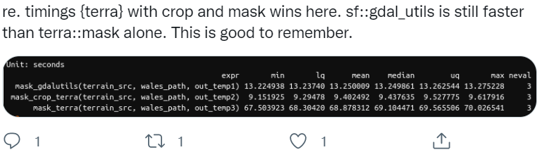

Warning: package 'sf' was built under R version 4.2.3Linking to GEOS 3.9.3, GDAL 3.5.2, PROJ 8.2.1; sf_use_s2() is TRUELINESTRING (0 0, 1 1, 2 2, 0 2, 1 1, 2 0)We’ll explore a number operations in this section that make up what most of us probably think of as typical GIS operations and how to perform them in R - operations such as clipping, subsetting, joining, dissolving, performing map algebra.
Keep in mind as we mentioned earlier that s contains functions that bind to these three primary underlying libraries:
sf
This breakdown of simple features follows for the most part this section in Spatial Data Science
** Simple** and valid geometries - Certain conditions have to be met with simple features: + For linestrings to be considered simple they must not self-intersect:
Warning: package 'sf' was built under R version 4.2.3Linking to GEOS 3.9.3, GDAL 3.5.2, PROJ 8.2.1; sf_use_s2() is TRUELINESTRING (0 0, 1 1, 2 2, 0 2, 1 1, 2 0)
is_simple
FALSE For polygons several other conditions have to be met to be simple:
We can break down operations on geometries for vector features in the following way:
TRUE
We can look at these operations by what they operate on, whether the are single geometries, pairs, or sets of geometries:
Unary predicates work to describe a property of a geometry.
A list of unary predicates:
| predicate | meaning |
|---|---|
is |
Tests if geometry belongs to a particular class |
is_simple |
Tests whether geometry is simple |
is_valid |
Test whether geometry is valid |
is_empty |
Tests if geometry is empty |
A list of binary predicates is:
| predicate | meaning | inverse of |
|---|---|---|
contains |
None of the points of A are outside B | within |
contains_properly |
A contains B and B has no points in common with the boundary of A | |
covers |
No points of B lie in the exterior of A | covered_by |
covered_by |
Inverse of covers
|
|
crosses |
A and B have some but not all interior points in common | |
disjoint |
A and B have no points in common | intersects |
equals |
A and B are topologically equal: node order or number of nodes may differ; identical to A contains B and A within B | |
equals_exact |
A and B are geometrically equal, and have identical node order | |
intersects |
A and B are not disjoint | disjoint |
is_within_distance |
A is closer to B than a given distance | |
within |
None of the points of B are outside A | contains |
touches |
A and B have at least one boundary point in common, but no interior points | |
overlaps |
A and B have some points in common; the dimension of these is identical to that of A and B | |
relate |
Given a mask pattern, return whether A and B adhere to this pattern |
See the Geometries chapter of Spatial Data Science for a full treatment that also covers **unary and binary measures* as well as unary, binary and n-ary transformers

Measures (with sf) make use of the underlying GEOS library, as well as the R units library that provides measure units for R vectors. Once a coordinate reference system has been defined for features, we often want to ask questions of our data such as:
Some examples using county and gage datasets we’ve seen in previous section (with refresher again on pulling in data from a .csv file with x and y information and making it spatial):
library(readr)
library(sf)
gages <- read_csv(system.file("extdata", "Gages_flowdata.csv", package = "awra2020spatial")) |>
dplyr::select(SOURCE_FEA, STATE, LAT_SITE, LON_SITE) |>
st_as_sf(coords = c("LON_SITE", "LAT_SITE"), crs = 4269)
st_distance(gages[1,], gages[2,])Units: [m]
[,1]
[1,] 58822.95Warning: package 'tigris' was built under R version 4.2.3To enable caching of data, set `options(tigris_use_cache = TRUE)`
in your R script or .Rprofile.counties <- counties("Oregon", cb = TRUE)Retrieving data for the year 2021
|
| | 0%
|
| | 1%
|
|= | 1%
|
|= | 2%
|
|== | 2%
|
|== | 3%
|
|=== | 4%
|
|=== | 5%
|
|==== | 5%
|
|==== | 6%
|
|===== | 7%
|
|===== | 8%
|
|====== | 8%
|
|====== | 9%
|
|======= | 9%
|
|======= | 10%
|
|======== | 11%
|
|======== | 12%
|
|========= | 12%
|
|========= | 13%
|
|========== | 14%
|
|========== | 15%
|
|=========== | 15%
|
|=========== | 16%
|
|============ | 17%
|
|============ | 18%
|
|============= | 18%
|
|============= | 19%
|
|============== | 19%
|
|============== | 20%
|
|=============== | 21%
|
|=============== | 22%
|
|================ | 22%
|
|================ | 23%
|
|================ | 24%
|
|================= | 24%
|
|================= | 25%
|
|================== | 25%
|
|================== | 26%
|
|=================== | 26%
|
|=================== | 27%
|
|=================== | 28%
|
|==================== | 28%
|
|==================== | 29%
|
|===================== | 30%
|
|===================== | 31%
|
|====================== | 31%
|
|====================== | 32%
|
|======================= | 32%
|
|======================= | 33%
|
|======================== | 34%
|
|======================== | 35%
|
|========================= | 35%
|
|========================= | 36%
|
|========================== | 36%
|
|========================== | 37%
|
|========================== | 38%
|
|=========================== | 38%
|
|=========================== | 39%
|
|============================ | 40%
|
|============================ | 41%
|
|============================= | 41%
|
|============================= | 42%
|
|============================== | 42%
|
|============================== | 43%
|
|=============================== | 44%
|
|=============================== | 45%
|
|================================ | 45%
|
|================================ | 46%
|
|================================= | 47%
|
|================================= | 48%
|
|================================== | 48%
|
|================================== | 49%
|
|=================================== | 49%
|
|=================================== | 50%
|
|=================================== | 51%
|
|==================================== | 51%
|
|==================================== | 52%
|
|===================================== | 52%
|
|===================================== | 53%
|
|===================================== | 54%
|
|====================================== | 54%
|
|====================================== | 55%
|
|======================================= | 55%
|
|======================================= | 56%
|
|======================================== | 57%
|
|======================================== | 58%
|
|========================================= | 58%
|
|========================================= | 59%
|
|========================================== | 59%
|
|========================================== | 60%
|
|========================================== | 61%
|
|=========================================== | 61%
|
|=========================================== | 62%
|
|============================================ | 62%
|
|============================================ | 63%
|
|============================================= | 64%
|
|============================================= | 65%
|
|============================================== | 65%
|
|============================================== | 66%
|
|=============================================== | 67%
|
|=============================================== | 68%
|
|================================================ | 68%
|
|================================================ | 69%
|
|================================================= | 69%
|
|================================================= | 70%
|
|================================================= | 71%
|
|================================================== | 71%
|
|================================================== | 72%
|
|=================================================== | 72%
|
|=================================================== | 73%
|
|==================================================== | 74%
|
|==================================================== | 75%
|
|===================================================== | 75%
|
|===================================================== | 76%
|
|====================================================== | 77%
|
|====================================================== | 78%
|
|======================================================= | 78%
|
|======================================================= | 79%
|
|======================================================== | 79%
|
|======================================================== | 80%
|
|======================================================== | 81%
|
|========================================================= | 81%
|
|========================================================= | 82%
|
|========================================================== | 82%
|
|========================================================== | 83%
|
|=========================================================== | 84%
|
|=========================================================== | 85%
|
|============================================================ | 85%
|
|============================================================ | 86%
|
|============================================================= | 86%
|
|============================================================= | 87%
|
|============================================================= | 88%
|
|============================================================== | 88%
|
|============================================================== | 89%
|
|=============================================================== | 89%
|
|=============================================================== | 90%
|
|=============================================================== | 91%
|
|================================================================ | 91%
|
|================================================================ | 92%
|
|================================================================= | 92%
|
|================================================================= | 93%
|
|================================================================== | 94%
|
|================================================================== | 95%
|
|=================================================================== | 95%
|
|=================================================================== | 96%
|
|==================================================================== | 97%
|
|==================================================================== | 98%
|
|===================================================================== | 98%
|
|===================================================================== | 99%
|
|======================================================================| 99%
|
|======================================================================| 100%options(scipen=3)
print(paste0('The total area of all counties in Oregon is: ',sum(st_area(counties))))[1] "The total area of all counties in Oregon is: 250841031869.001"Clarify what dissolve is and it’s not using st_dissolve, it’s just using tidyverse operations ## Fixing topology errors - show typical fixes for topology errors
You may encounter errors like this when running geoprocessing operations like st_join in R:
Error in wk_handle.wk_wkb(wkb, s2_geography_writer(oriented
= oriented, : Loop 0 is not valid: Edge 772 crosses edge 774Running st_make_valid might not fix.
You may need to turn off spherical geometry - sf_use_s2(TRUE), run st_make_valid, and then turn spherical geometry back on - sf_use_s2(FALSE) See background on S2 here and discussion of S2 related issues here
We can crop our elevation raster to just the bounding box of Crater Lake - using mask, we can clip it to the actual polygon boundary
Let’s see what elevation and Crater Lake boundary look like prior to cropping and masking
Here we use crop to crop the elevation raster to the bounding box of our Crater Lake polygon feature
And finally we can use mask to mask the raster to just inside the polygon outline of Crater Lake National Park.
Note - if you have a large raster, it makes a HUGE difference to use crop first, then mask - mask is a much more computationally intensive operation so it will pay off to crop first then mask. An interesting twitter thread regarding this just the other day:

We can divide map algebra into a couple of categories:
Say we want to convert our elevation raster from meters to feet:
elev_feet = elevation_tm * 3.28084
elev_feetOur max value is 8890, which makes sense - the high point in Crater Lake National Park is Mount Scott at 8,929’.
What if we want to make elevation bins, or classify some elevations as NA with our elevation raster?
elev_new = elevation_tm
elev_new[elev_new > 2000] = NA
plot(elev_new)A simple focal window operation
Here us demonstrate using the zonal function in terra to summarize a value raster of elevation, using an srtm.tif from spDataLarge, by the zones of NLCD classes using nlcd.tif raster also in the spDataLarge package.
srtm_path = system.file("raster/srtm.tif", package = "spDataLarge")
srtm_path
srtm = rast(srtm_path)
srtm
nlcd = rast(system.file("raster/nlcd2011.tif", package = "spDataLarge"))
srtm_utm = project(srtm, nlcd, method = "bilinear")
srtm_zonal = zonal(srtm_utm, nlcd, na.rm = TRUE, fun = "mean")
srtm_zonal